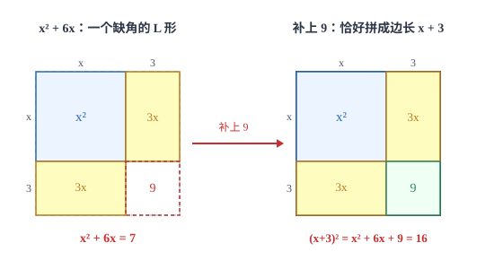

一元二次方程
二次方程有四种解法，但背后只有一条思路：把方程变成「一个式子的平方等于一个数」，或者变成「两个式子的积等于零」。
| 所属主题 | 方程与不等式 |
|---|---|
| 所属模块 | 代数 |
| 课标学段 | 第四学段（7~9 年级） |
| 前置知识 | 因式分解、二次根式 |
| 核心素养 | 运算能力模型观念抽象能力 |
教材定位
人民教育出版社《人教版（2024版）义务教育教科书·数学》
九年级上册第25章 一元二次方程25.1 一元二次方程的概念25.2 降次——解一元二次方程
对应九上 25.1 与 25.2。本篇补讲了直接开平方，并给出两种增长率模型。
说明
只含一个未知数、未知数的最高次数是 2、两边都是整式的方程叫一元二次方程，一般形式是 ax^2+bx+c=0\ (a≠ 0)，其中 a 叫二次项系数、b 叫一次项系数、c 叫常数项。a≠ 0 这一条不能省：若 a=0，二次项消失，方程就退化成一元一次方程了。判断一个方程是不是一元二次方程，必须先化成一般形式再看。
解法有四种，但归到底只有两条路。第一条路是「化成平方等于数」：直接开平方法与配方法都走这条路，把方程整理成 (x+m)^2=n 后，只要 n≥ 0 就能开平方得到两个解。第二条路是「化成积等于零」：因式分解法把方程写成 (x-x_1)(x-x_2)=0，由「两个因式的积为零，至少一个因式为零」直接读出两个根。求根公式则是配方法的一般化结果，把 a、b、c 代进去就能得到根，不必每次配方。
使用场景
当题目涉及面积、体积且边长含未知数时，列出的往往是一元二次方程。例如「长方形面积给定、长比宽多几米」「正方形四角剪去小正方形折成盒子、容积给定」，把几何关系写成等式后就是二次方程。这类题解出两个根后，必须按实际意义取舍：边长不能为负，超出限制的那个根要舍去。
当题目涉及连续两次相同幅度的增长或下降时，模型是 a(1± x)^2=b，其中 a 是初始量、b 是两次变化后的量、x 是每次的变化率。这类题的方程本身就是完全平方形式，直接用开平方法即可。连续三次变化则把指数改成 3，思路完全一样。
注意点
方程两边同时含有未知数时，不能直接约去。x^2=3x 两边约去 x 得 x=3，丢了 x=0 这个根。正确做法是移项后因式分解：x^2-3x=0，x(x-3)=0，得 x_1=0、x_2=3。约去的那个式子可能为零，而零不能作除数。
用公式法时，必须先化成一般形式再确定 a、b、c 的值，尤其注意符号。2x^2=3x-1 要先整理成 2x^2-3x+1=0，此时 b=-3、c=1；若直接照原式读，会把 b 当成 3、c 当成 -1，代入公式后全错。
证明

图 1：x^2+6x 是个缺角 L 形，补上 3× 3=9 恰好拼成 (x+3)^2——这就是「一次项系数一半的平方」的来历
证明
结论 1方程 (x+m)^2=n 可以直接开平方法解出：x=-m±\sqrtn，前提是 n≥ 0；若 n<0，方程无实数根。
最简单的形式：若方程已经是 (x+m)^2=n，由平方根的定义，x+m 等于 n 的平方根，所以 x=-m±\sqrtn，前提是 n≥ 0；若 n<0，任何实数的平方都不为负，方程无实数根。这条路叫直接开平方法。
关键一步依据是平方根的定义与移项（等式性质一）：x+m 必须是 n 的平方根，n≥ 0 时有 ±\sqrtn 两个取值，所以解有两个；n<0 时实数的平方不可能为负，所以没有实数解。
结论 2配方法：x^2+6x-7=0 两边同加 9 化成 (x+3)^2=16，解得 x=1 或 x=-7。
麻烦的是 x^2+6x-7=0 这种形式。它的左边不是一个完全平方，但可以「补」成完全平方：x^2+6x 差一个常数就能写成 (x+3)^2=x^2+6x+9，于是在方程两边同时加 9，得 x^2+6x+9=16，即 (x+3)^2=16，开方得 x+3=± 4，x=1 或 x=-7。补上的那个数，正是「一次项系数一半的平方」，这就是配方法。
关键一步依据是完全平方公式 (x+3)^2=x^2+6x+9：补的常数是「一次项系数一半的平方」3^2=9，把它同时加在方程两边（等式性质一）不改变解；补齐之后左端成为平方，才可以使用开平方。
结论 3求根公式：ax^2+bx+c=0（a≠ 0）的解是 x=\dfrac-b±\sqrtb^2-4ac2a。
把配方法用在一般形式上，就得到求根公式。由 ax^2+bx+c=0 且 a≠ 0，两边除以 a 得 x^2+b/ax+c/a=0；移项后两边加上 ≤ft(b/2a)^2，左边凑成 ≤ft(x+b/2a)^2，右边是 \dfracb^2-4ac4a^2；再开方、移项整理，得 x=\dfrac-b±\sqrtb^2-4ac2a。公式里的每一部分都能在配方过程中找到来处，所以不必强记。
关键一步依据是配方法与等式性质二：除以 a 要求 a≠ 0（这正是二次方程的定义条件），补上的数是「一次项系数一半的平方」≤ft(b/2a)^2。所以公式不是新定理，而是配方过程写下来的结果，记住配方比死记公式更牢。
结论 4能因式分解时用因式分解法更短：x^2-5x+6=0 分解为 (x-2)(x-3)=0，直接读出 x=2 或 x=3。
因式分解法是另一条路，它更短：若能把 ax^2+bx+c 分解成两个一次式的积，那么方程变成「积等于零」，只要令每个因式为零即可。x^2-5x+6=0 分解为 (x-2)(x-3)=0，直接读出 x=2 或 x=3，比套公式快得多。所以解题顺序是：先试因式分解，分解不动再用公式。
关键一步依据是「若乘积为零，则至少有一个因式为零」：这一步把二次方程拆成两个一次方程，但两个因式都要取，所以一个二次方程最多给出两个解；反过来两个一次方程的解合起来也正好验证了二次方程最多两个根。
结论 5开平方与因式分解的共同点是「降次」——把二次方程打回一元一次方程。
两条路的共同点是「降次」：二次方程难解，是因为未知数出现了两次。开平方把二次变成了「一次加根号」，因式分解把二次变成了「两个一次」，都是把问题打回已经会解的一元一次方程。
关键一步依据是方程的次数决定解法：二次方程不能直接用一元一次方程的移项与合并同类项解出，所以必须先降次；两条路分别对应「配方开方」与「因式分解」两种降次手段，降到一次方程后就都会解了。
动手实验
用一张方格纸把配方法画出来。画一个边长为 x 的正方形（面积 x^2），在它右边和下边各贴一个 x× 3 的长条（两块面积共 6x），此时图形是一个缺了一角的 L 形。在缺角处补一个 3× 3 的小正方形，整个图形就变成边长为 x+3 的大正方形，面积是 (x+3)^2。补上的 9 加上原来的 x^2 与两旁的 6x，正好凑成 (x+3)^2，这就解释了「加一次项系数一半的平方能凑成完全平方」（拼法见图 1）。
解题思路
拿到一元二次方程，按顺序试三种方法。第一，看能不能直接开平方：若方程形如 (x+m)^2=n 或 a(x+m)^2=n，直接开方最快。第二，试因式分解：整理成一般形式后，看常数项能否拆成两个数、其和等于一次项系数（十字相乘）。第三，前两条都不行，用公式法，先算 \Delta=b^2-4ac，再代入 x=\dfrac-b±\sqrt\Delta2a。
公式法的操作细节要记牢：先化成一般形式并写出 a、b、c 的带符号值；算 \Delta 时把 b 连同符号一起平方，c 为负时 -4ac 变成加；\Delta<0 直接写「无实数根」，不要硬开负数的平方根；\Delta≥ 0 时代入公式，最后把根号内的部分化简（如 \sqrt20=2\sqrt5），能约分的要约分。
应用题多一步取舍。解出两个根后，逐个回到题意检验：长度、面积、人数、时间都必须为正；若题目限定了范围（如「宽不超过 5 米」），超出的根要舍去。写答案时说明舍去哪个根、为什么舍，这一步在评分里是独立的分点。
按场景的例题
例 1（场景：图形设计） 长方形场地的长宽关系
一块长方形场地的面积是 24 平方米，长比宽多 2 米。求它的长和宽。
解：设宽为 x 米，则长为 (x+2) 米，由面积得 x(x+2)=24，整理成 x^2+2x-24=0。因式分解：常数项 -24 拆成两数之积且和为 2，取 6 与 -4，得 (x+6)(x-4)=0，所以 x=-6 或 x=4。宽不能为负，舍去 -6。检验：宽 4 米、长 6 米，面积 24 平方米，符合。
答：宽 4 米，长 6 米。
例 2（场景：金融与增长） 连续两次降价的百分率
某商品原价 100 元，连续两次按相同的百分率降价后售价为 81 元。求每次降价的百分率。
解：设每次降价的百分率为 x，则第一次降价后为 100(1-x)，第二次后为 100(1-x)^2，由题意得 100(1-x)^2=81。两边除以 100：(1-x)^2=0.81，开平方得 1-x=± 0.9。由 x<1 取 1-x=0.9，得 x=0.1；另一个值 1-x=-0.9 给出 x=1.9，不符合「降价百分率小于 1」的实际意义，舍去。检验：100× 0.9× 0.9=81，符合。
答：每次降价 10%。
例 3（场景：竞技与游戏） 竞赛题中用公式法解方程
用公式法解方程 x^2-4x-1=0。
解：这里 a=1、b=-4、c=-1。\Delta=b^2-4ac=(-4)^2-4× 1×(-1)=16+4=20>0，有两个不相等的实数根。代入公式：x=\dfrac4±\sqrt202=\dfrac4± 2\sqrt52=2±\sqrt5。检验：把 x=2+\sqrt5 代入，x^2=9+4\sqrt5，4x=8+4\sqrt5，所以 x^2-4x-1=(9+4\sqrt5)-(8+4\sqrt5)-1=0，成立。
答：x_1=2+\sqrt5，x_2=2-\sqrt5。
常用推论
若方程有一根为 0，代 x=0 得 c=0；若有一根为 1，代 x=1 得 a+b+c=0；若有一根为 -1，得 a-b+c=0。这三条在「已知一根求参数」的题里能省掉整段计算。
形如 (x+m)^2=n 的方程，当 n>0 时有两个不等实根，n=0 时有两个相等的实根 x=-m，n<0 时无实数根。这三句话就是判别式在特殊情况下的样子，下一篇会把它一般化。
若 x_1、x_2 是方程 ax^2+bx+c=0 的两根，则 x_1^2+x_2^2=(x_1+x_2)^2-2x_1x_2。求两根平方和、倒数和这类「对称式」的值，不必解出两个根，直接用两根之和与两根之积代入即可。
易错点
错解 x^2=3x 时，两边约去 x，得 x=3，只有一个根。
为什么错约去 x 相当于两边同除以 x，而 x 可能等于 0。x=0 时原方程两边都是 0，本身就是解，被除掉了。
正确移项得 x^2-3x=0，因式分解得 x(x-3)=0，所以 x_1=0、x_2=3。代回检验：0=0 与 9=9 都成立。
错用公式法解 2x^2-3x+1=0 时，写成 x=\dfrac3±\sqrt9-82，得 x=2 或 x=1。
为什么错分母写成了 2，公式的分母是 2a=4；同时 -b 应为 +3 没错，但分母错导致两个根都算错。
正确x=\dfrac3±\sqrt14，即 x_1=1、x_2=1/2。代回检验：2-3+1=0，且 2×1/4-3/2+1=0，都成立。
错解 2x^2+4x-6=0 时，直接配方写成 (x+2)^2=10。
为什么错二次项系数不是 1 时，先两边除以 2 再配方。直接用 b=4 的一半 2 配方，等于把二次项系数当成了 1。
正确两边除以 2 得 x^2+2x-3=0，配方得 (x+1)^2=4，所以 x_1=1、x_2=-3。检验：2+4-6=0，18-12-6=0，都成立。
直观理解
一元二次方程的解法可以想成「把一个弯着的式子摊直」。x^2+6x-7=0 里的 x 出现了两次，一次平方、一次一倍，处理不了；配方就是补上一块面积，让它变成一个整体的平方 (x+3)^2=16，于是只剩「一个数的平方等于 16」这一句人话。因式分解则是另一种拆法：把二次式拆成两个一次式的积，让「积为零」这个最简单的性质接管。两条路都在做同一件事——把二次降成一次。